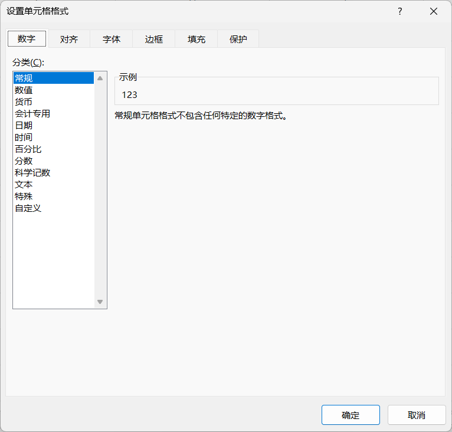
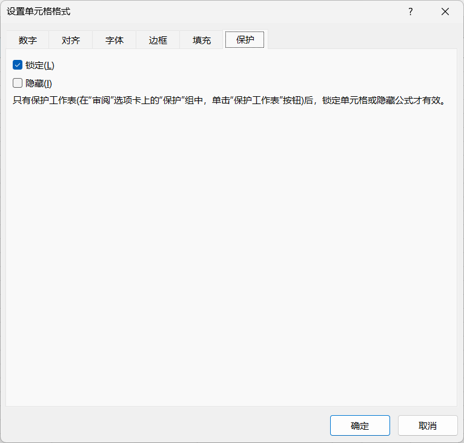

- 内容
-
单元格工作表样式图表
单元格 Cell
- 定位
-
单击定位↑↓←→：一次移动一个单元格CTRL + ↑↓←→：移动到列首、列尾、行首、行尾TAB：向后移动SHIFT + TAB：向前移动
- 选择
-
单选：鼠标单击多选
. 连续选择：鼠标拖到选择、SHIFT+单击
. 断续选择：CTRL+单击
全选数据区. 数据区任一单元格，按Ctrl + A
. 第一个单元格，CTRL + Shift + → + ↓：先选择到行尾，再选择到列尾
- 数据录入
-
1. 手动录入. 单个单元格录入. 区域录入：选择单元格区域（连续或断续），输入数据，按Ctrl + Enter，选择区域被数据填充2. 自动录入. 拖动填充：选择若干个已有数据的单元格，拖到鼠标，可以根据单元格数据的特点自动填充，如递增、递减、等差等等；要求单元格数值是可以序列化的，如1、2、3或表1、表3、表5或no1、no2、no3. 自动填充："编辑"组→填充→序列，可以指定更多的填充方式，特别适合需要填充数量多的区域3. 外部导入
自动填充 - 自定义序列
- . 文件 → 选项 → 高级 → 编辑自定义列表（最下面）
- . 可手动输入；也可从单元格导入数据项
- 调整列宽|行高
-
单独调整：双击 两列|两行连接线，根据当前列|行的内容自动调整同时调整：全选单元格区域，拖动 某列|行连接线，调整所有列|行宽度、高度一致
- 单元格样式
-
打开方式CTRL + 1选择单元格→右键→设置单元格样式"单元格"组→格式→设置单元格样式设置内容数字对齐字体边框填充保护
 单元格样式 - 地址
- . 使用公式时，要特别注意
- . 使用F4转换地址类别
- . 反复按F4，可以在行、列、行列之间切换
- . 可以选择多个地址同时转换
-
相对地址|相对引用：地址随引用不断发送变化；A1绝对地址|绝对引用：地址固定不变；$A$1混合地址|混合引用：列固定或行固定；$A1；A$1跨表引用：前面是表名，后面是单元格地址；=原始数据!G35
工作表 Sheet
- 概述
- . 一个excel文件可以有多张工作表sheets；可以根据需要将业务内容相近的工作表放在不同的excel文件或同一个excel文件
- . 可以同时操作多张表：按住Shift，点击其它工作表，然后操作某个工作表，如设置样式，则其它工作表也会生效
-
工作表 - 保护工作表
- . 保护工作表：限制当前工作表的操作，如编辑，需要设置密码；请 牢记密码，谨慎操作
- . 部分单元格取消锁定：如果仅仅指定部分区域允许操作，应先在"单元格格式"对话框"保护"选项卡中，取消"锁定"，再执行保护工作表
- . 隐藏公式：同样需要执行单元格的"隐藏"操作再执行保护工作表操作
- . 部分区域允许凭密编辑：没有密码，不允许编辑；可以设置多个区域；如信息收集表中，仅仅允许用户操作数据字段，文字等提示字段不允许操作
- . 保护工作簿：也可以在"文件" → "信息" → "保护工作簿"，设置整个excel文件的访问
-
 保护工作表 -

保护工作表 
保护工作簿
样式 Style
- 套用表格样式
- . 鼠标定位在工作表中某个数据单元格，再执行以下命令，系统会自动检查工作表范围并应用选定的表格样式
-
"插入" → 表格"开始" → 样式组 → 套用表格样式
图表 Diagram
- 说明
- . 创建图表需要数据支撑
- . 框选数据时，记得行和列的标题将作为坐标，不要漏掉
- . 图表是动态的；当数据发送变化时，图表也会相应的改变
- . 选择图表后，excel标题会出现两个相应的动态选项卡：图表设计和设计，方便更多操作
- . 还可以创建组合图表，方便比对更多数据
小贴士 Tips
- 快速选择
- CTRL + 方向键
- CTRL + SHIFT + 方向键
- 插入多个空白行
- 先选择若干行，再执行"插入"